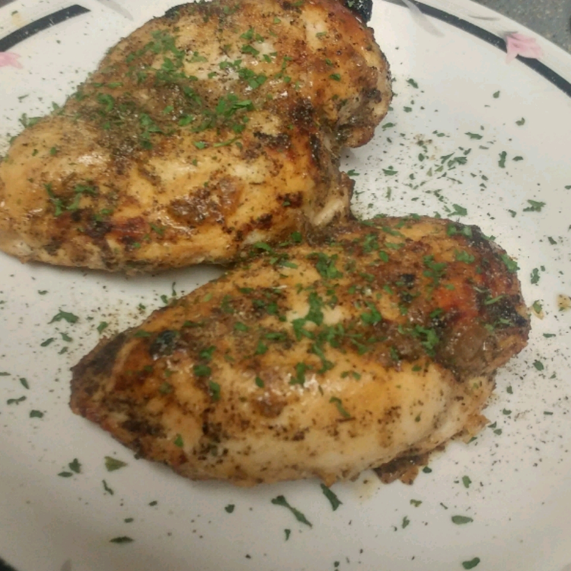

Lemon Pepper Chicken

Description
This recipe describes how to make lemon pepper chicken. Quick, easy, and oh-so tasty, it is perfect for any occasion.
Ingredients
- 6 skinless, boneless chicken breast halves
- 1 teaspoon lemon peper
- 1 pinch garlic powder
- 1 teaspoon onion powder
Steps
- Preheat oven to 350 degrees F (175 degrees C).
- Place chicken in a lightly greased 9x13 inch baking dish.
- Season chicken with lemon pepper, garlic powder and onion powder.
- Bake in oven for 15 minutes.
- Take chicken out of oven, turn over pieces and add more seasoning to non-seasoned side.
- Bake for an additional 15 minutes, or until chicken is cooked through and juices run clear.
Return to Home